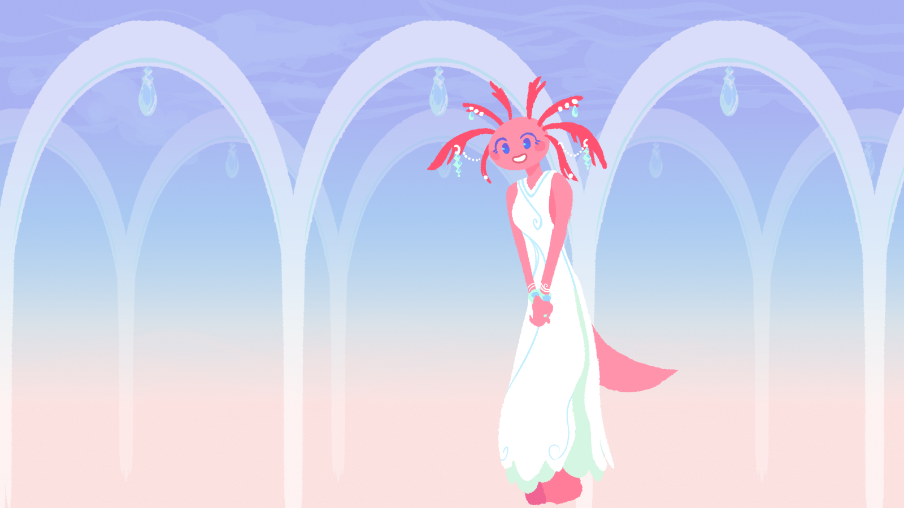

Queen Axolotl
Wise and friendly. Always willing to help. A trained psychologist.
Check out the inspiration for this project in this video by Oliver Lugg and Narotiza
The game is currently being written in the Ren'Py Visual Novel Engine.
Keep up with development in the #adventuraxolotl channel in the Oliver Lugg discord server!
This is a fan project - so if you want to help it come to fruition, please contact me via my github page, or via the discord server above.
What kinds of work need to be done?
Adventuraxolotl is a game of strategy and negotiation set in a world where amphibians rule. You must use your powers of persuasion to guide your nation through complex socio-economic challanges, geopolitical disputes, and all the great issues facing amphibian kind.
You win Adventuraxolotl by unifying the many factions of Lissamphibia. With so many slimy customers around, this is easier said than done!
Currently the game is in development - aiming for a demo release before full production!
The game does not contain a virus! In fact, it contains (something).
The game contains an extensive manual with detailed profiles of every leader and how to please them.
You are the secretary of an inter-governmental organisation. Your role is to ensure that peace and unity reigns across Lissamphibia, using your powers of negotiation, diplomacy, and spycraft.
Each year, you will host a meeting of the nations, where the leaders will decide on how the world will look like for the coming years. In between, you'll visit the leaders and their people, find out the issues of today, and make some friends, enemies, or even... lovers?
Ensure that you keep the trust of the leaders, otherwise you'll be fired. Speaking of, here they are now!
Wise and friendly. Always willing to help. A trained psychologist.
Generally amicable but with a massively inflated ego. Thinks he’s the best at everything and overreacts if told otherwise.
Lives in a cave. Uses drones to mine stuff. Reclusive and scheming. Always trying to trick people and quite good at it. It's difficult to figure out his true intent, most times.